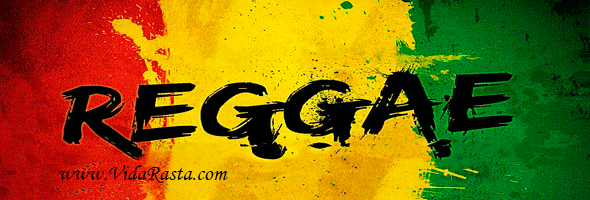

Reggae

Eles un género reggae musical de origen jamaiquino (el adjetivo jamaicano se aplica a las personas). El termino reggae algunas veces es usado ampliamente para referirse a la mayor al de los ritmos jamaiquinos, incluyendo ska, dub y rocksteady. El término es más específicamente usado para indicar un estilo particular que se originó después del desarrollo del rocksteady. En este sentido, el reggae incluye dos sub-géneros: el roots reggae y el dance hall. El termino reggae comenzó es una derivación de ragga, que a su vez es una abreviación deraggamuffin, que en ingles significa literalmente harapiento.
Página
Portada